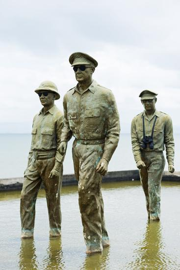

in Palo, Leyte is a historic landmark that marks the triumphant return of Douglas MacArthur to the Philippines during World War II. Immortalized by the iconic bronze statues of MacArthur and his forces wading ashore, the site stands as a powerful symbol of liberation, resilience, and the fulfillment of a promise that changed the course of Philippine history.

The memorial park commemorates the historic landing on October 20, 1944, when Allied forces arrived in Leyte Gulf to begin the liberation of the Philippines from Japanese occupation. This moment fulfilled General MacArthur’s famous vow, “I shall return,” which he declared after being forced to leave the country in 1942. The landing in Leyte marked the beginning of a major military campaign that would eventually lead to the end of the war in the Pacific.
Today, the park serves not only as a historical site but also as a place of reflection and national pride. The larger-than-life bronze statues, set against the backdrop of the sea, recreate the dramatic landing scene and attract visitors from all over the country. Located near Tacloban City, the park is easily accessible and offers a peaceful coastal atmosphere where visitors can learn about history while enjoying scenic views of Leyte Gulf.

The famous line “I shall return” was fulfilled by Douglas MacArthur at this very site in 1944.
The landing at Leyte was part of one of the largest amphibious operations in World War II.
The bronze statues are positioned in shallow water to closely resemble the actual landing scene.